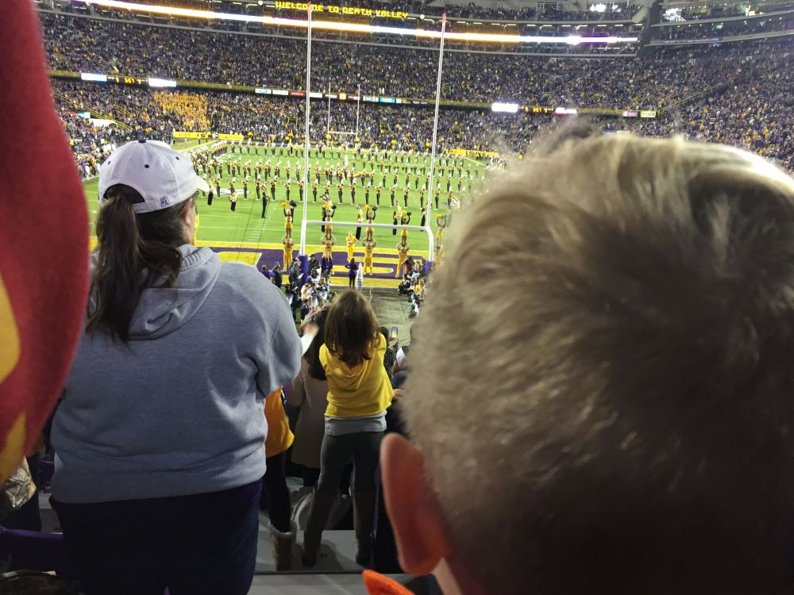

Liam couldn't speak while standing on the concourse. He stared across the field with the band providing the soundtrack of another great night of college football. With a nudge he grabbed my hand and we walked the steps together to those familiar seats where I sat with my own father growing up. I sent Pops a "Thank you!" text once again for the tickets and the memories.
LSU's melodic "Alma Mater" followed the playing of the "Star Spangled Banner." The band's job was done. The Tigers emerged from the tunnel below our section and took the field in all their ferocious might as the crowds roared all around us. This was it. Liam cheered and danced in his seat as the team took the field for kickoff and the start of the game.
Page 3